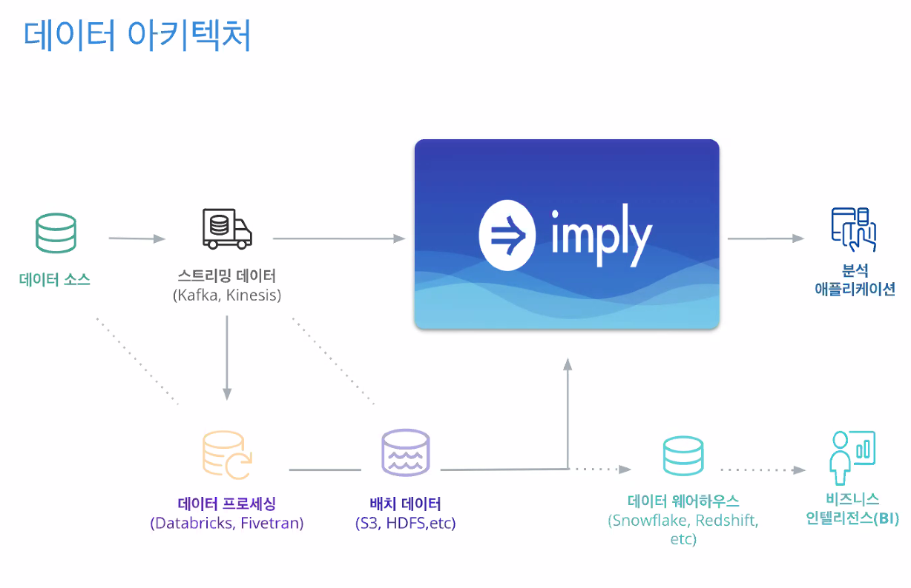
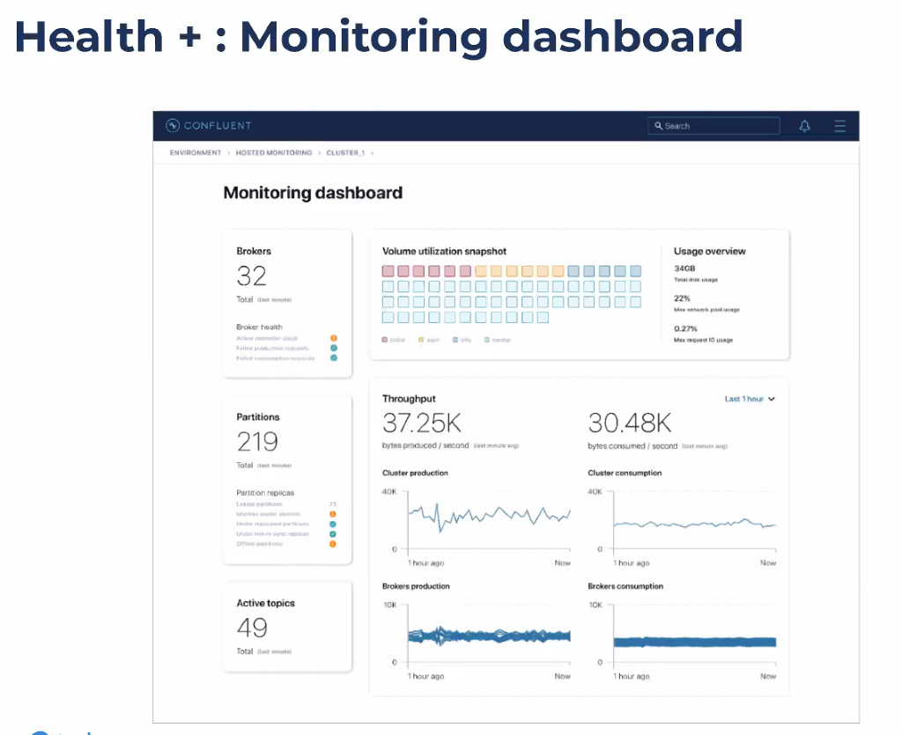

Confluent & Imply 웨비나 온라인 참석 후기
2022, Jul 21
22-07-21에 Confluent와 Imply가 주최한 실시간 데이터 구축 웨비나에 참석했습니다
14시부터 약 50분 정도 진행된 것 같습니다.
Contents
- kafka, druid/imply 소개
- 데이터 산업에서 언제 imply를 쓸 수 있는가?
- 기존에는 원천 데이터 소스를 elt를 통해 목적에 맞게 가공/처리해서 데이터웨어 하우스나 데이터 레이크에 저장하는 방식이였다면, 이제는 kafka 스트리밍 데이터를 받아 imply 통해서 분석을 할 수 있다.

- 분석어플리케이션 데모
- druid웹콘솔을 통해서 간단히 토픽 생성하고 kafka 데이터 수집하는 데모였는데, 복잡한 프로그래밍이 필요없어서 편해보이지만 kafka를 잘 모르면 사용하기 어려울 것 같습니다.
- k2d stack(kafka+druid) 활용사례
- kafka이벤트를 받아서 imply에 넘겨서 druid를 통해 실시간 분석을 하고 어플리케이션에 전달하는 것
- 장점 : netflow 수집 및 분석, 스트림 분석 , Application 성능 관리
- kafk 모니터링이 가능한 대시보드
- 현재 회사에서 사용하는 그라파나로는 토픽별 lag이나 cpu점유 정도 확인할 수 있는데요. 이 제품은 뭔가 더 디테일하게 다른 정보도 확인할 수 있는 것 같습니다.

후기
k2d stack에 대해 알 수 있어서 좋았습니다. 구축 사례를 좀 더 알고 싶었는데요. 기회가 된다면 다음에도 참석하고 싶네요.
참고로 2022년 10월 20일에 druid 오프라인 summit이 개최된다고 합니다.